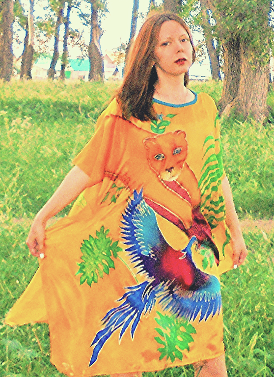
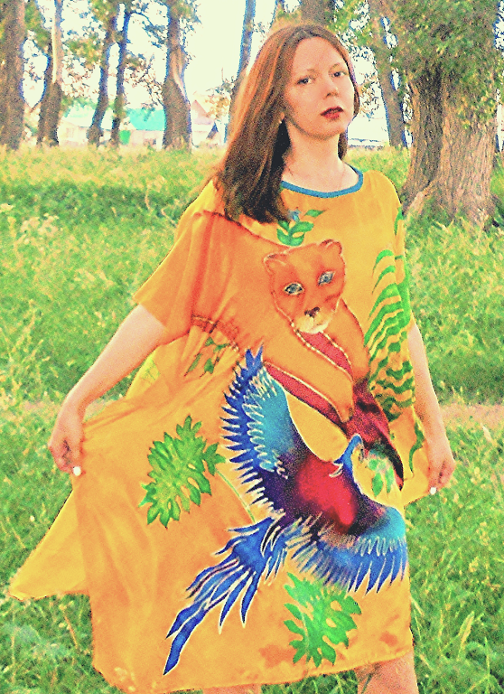

AUTHOR DOLLS
Making author dolls was very interesting for me. On the manufacture of each took at least a month. For each I thought through the image, which in the process changed.
I was looking for images for dolls in the outside world. I spent a lot of time on the Internet and I found images for creativity, too.
I tried to convey the mood of dolls and create character for them.


In 2016 my personal exhibition took place. Children were interested to see the handmade dolls, some adults too.
Gallery of dolls exhibited at the exhibition in 2016


BATIK
Batik is a fascinating process. Focusing on the manufacture of batik completely distracted from the problems. Conducting smooth contour lines, it was important to make the lines smooth and continuous, then to fill the space with bright colors. When batik was completely ready, I could look at batik for a few minutes every day, not understanding why, but I liked it. It's a kind of stress therapy.
 

I imagined how the sea wind waves colored silk. Until recently it was white translucent silk, and now after painting, summer landscapes came to life on silk - bright flowers and butterflies.